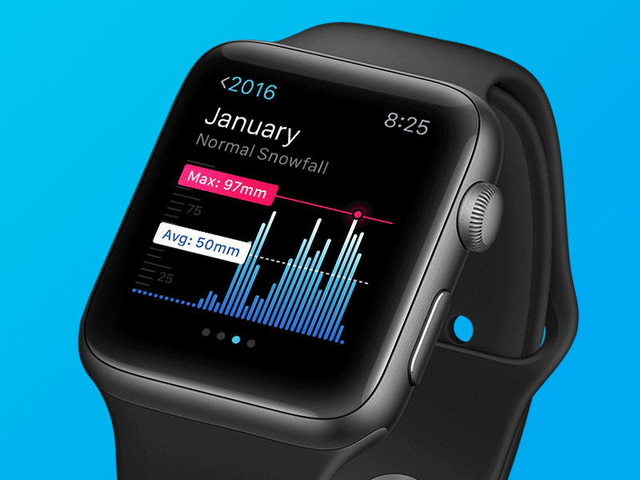
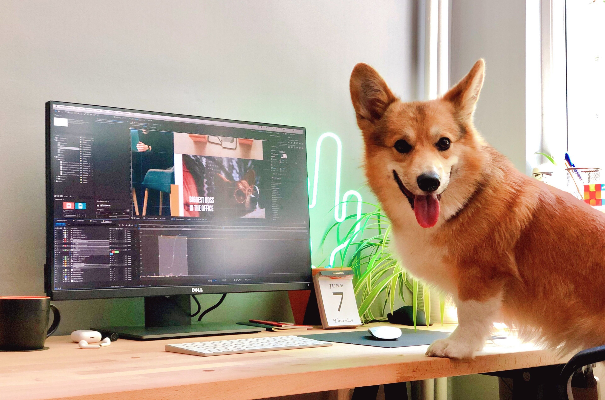

Stefan Vladimirov
Chief Creative at Swipes. Loves order and beauty. Always striving to achieve the balance between function
and aesthetics.
Motion & Product Designer
Short intro
My name is Boris Borisov and I'm really bad at writing short intros about myself.
What do you do for a living?
Long story short: "I do cool and meaningful visuals for nice people.”
"Rainfall for Apple Watch" on Dribbble.
When did you find your passion for design?
As a kid I never imagined that I would be into something even remotely related to drawing. I was into astronomy and physics at that time and I even graduated a High School of Mathematics and Sciences. As a teenager I somehow got into graffiti, then I met Photoshop 7.0 and it changed everything! From there on it was all about learning new things, exploring new tools, new software and mediums. Physics became a thing of the past. One thing led to another and I ended up working on design projects of different nature.
How long have you been doing your craft?
Professionally for about 6 years.
Describe the beginning of your day
It all starts with waking up around 8:30. I take a nice cup of coffee and spend the first hour of my day at the park with my dog. It consists of being amazed by how coffee works and contemplating on life while picking dog poop off the ground. I squeeze in an occasional workout, then I take a shower and rush into the studio where all the magic happens.
What’s your workspace?
MacbookPro with a 27” monitor + wireless peripherals (I really hate cables). I prefer a clean, but not too minimal desk. I still keep some notepads, memorabilia, a plant or two... maybe a Corgi.
What’s your source of inspiration?
Typically getting started with the project and going with the flow works for me. Inspiration comes in many forms. I like to leave it build up as I invest myself in the task.
What works are you most proud of?
I don’t have particular favourite, but the "Sneaky Submarine" was a huge game changer for me. Mostly because it proved that if I get excited enough about a project, I can make it happen no matter the circumstances. At that time these super-polished chunks of ground and water were really popular, but nobody made it move, so I decided that I'm going to be the first to do it. I had no idea how to make it happen and I couldn't find any tutorials even remotely close to what I was trying accomplish. After a week of pure dedication I managed to figure everything out and it became an instant hit on Dribbble.

"Rainfall for Apple Watch" on Dribbble.
What are the tools you use in your day to day life?
Sketch, After Effects, Abstract, Marvel App, Principle, Cinema 4D, Illustrator
Do you follow any set of principles for your work?
Honesty. Quality over quantity. No project is cool enough if there are no good people involved.
What’s your favourite movie?
Can't really point to a particular movie, but I really like the ones that keep me guessing until the end. 🤯
What's your favourite book?
King Rat by James Clavell
What advice would you give to people that start out with design?
Just hang in there. It's not rocket science, but you need persistence. Comfort will kill you slowly, so keep exploring and try new things every day. You'll amaze yourself!
Have you ever thought of empowering your creative community in any way, shape or form?
Definitely! In light of that, me along with seven other local designers recently decided to join forces in building an online platform for skill sharing and experimentation. Our goal is to support the Bulgarian design community, inspire creativity and grow together. And yes, I just copied that from our Dribbble profile description. I’ll keep you posted on our progress!
Meet Boris on the Social Media
Dribbble Behance InstagramIt's an honor to call you a friend of mine. I'm grateful and humbled by the fact that you were my mentor. Your help played an essential role in the shaping of me as a professional. Thank you for the interview, Borko.